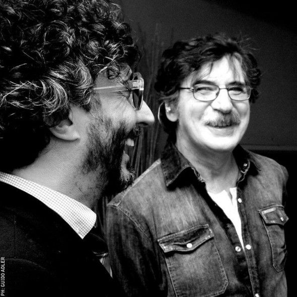
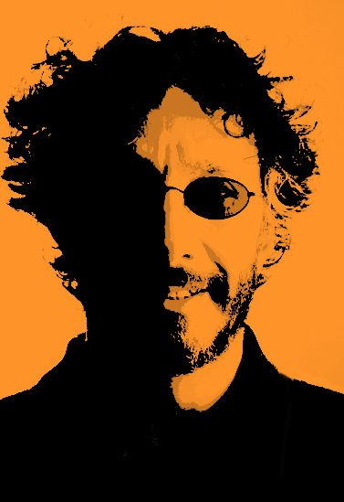

Comienzos de Fito, el trovador del rock

Rodolfo Páez, conocido artísticamente como Fito Páez, es un músico, compositor y cantante argentino de rock. Nació el 13 de Marzo de 1963 en Rosario, Argentina, y su pasión por la música fue sin ninguna duda, una herencia familiar. Su madre, fallecida a poco de nacer Fito, era profesora de piano y su padre lo introdujo en la buena música. Esas influencias lo llevaron desde su adolescencia a integrarse y formar sus propios grupos; a comienzos de los 80, junto a Jorge Lionch, Raul Sepúlveda y Liliana Herrero, entre otros, formó el grupo cultural SUMA. Poco tiempo después se integró a la banda de Juan Carlos Baglietto, rosarino también, protagonista de un fenómeno musical que muy pronto llegó a Buenos Aires. Como autor, arreglador y tecladista de esa formación, Fito hizo su desembarco en la Capital argentina. Paralelamente conoció a Charly García y pasó muy poco tiempo hasta que éste lo invitara a integrar su banda. Junto a Charly desde el 83, Fito siguió componiendo sus temas y en 1984 grabó su primer disco solista, “Del ‘63”, que impactó con melodías que tomaron las fuentes del rock, jazz, tango y folklore y letras que nunca cerraron los ojos al paisaje de la realidad. En 1985 registró su segundo disco solista titulado "Giros".
Con este álbum, se consagró como intérprete y compositor, especialmente en canciones como "11 y 6", "Cable a tierra" y "Yo vengo a ofrecer mi corazón". En 1986 Páez grabó un maxi-single titulado "Corazón clandestino" con tres temas, incluyendo "La rumba del piano" junto al gran compositor brasileño Caetano Veloso quien luego versionó otros temas como "Un vestido y un amor", colaborando también en la edición portuguesa de Circo Beat. Luego se unió con otro de los grandes de la música nacional: Luis Alberto Spinetta. Juntos trabajaron en un proyecto musical que vio la luz en forma de un álbum doble titulado "La, La, La".
En 1987 grabó "Ciudad de pobres corazones", una dura declaración de principios en momentos en que evaluaba la posibilidad de radicarse en otro país. "Ey!", se editó en 1988 y marcó el final de su primer contrato discográfico. En 1989 editó "Crónica", un disco con 14 canciones. La década del ´90 arrancó con un nuevo sello discográfico y el álbum; "Tercer mundo", con canciones como "El chico de tapa", "Religión Song" y particularmente "Y dale alegría a mi corazón" que se transformó en un himno. En julio de 1992 sale "El amor después del amor” que se transformó en un éxito instantáneo de ventas. "Tumbas de la gloria", "Dos días en la vida", "A rodar mi vida", "Sacha, Sissí y el círculo de baba" y "Un vestido y un amor" fueron algunos de los hits que uno tras otro convirtieron el álbum en un clásico que superó las 700.000 copias vendidas. La gira de presentación, que se llamó "Rueda Mágica", duró dos años. En 1994 editó el álbum "Circo Beat", que reafirmó su enorme popularidad. Contiene el hit "Mariposa tecknicolor" y fue grabado en Rosario, la Isla de Capri y Londres. En 1996 sale a la venta "Euforia", disco que superó el doble Platino. En pleno auge de la llamada música “unplugged”, Páez reversionó sus más grandes éxitos. Después de grabar durante largos meses un álbum en sociedad con el español Joaquín Sabina, publican el disco “Enemigos Íntimos” en 1998. El disco salió con buenas ventas pero la gira de presentación fue suspendida por diferencias entre los artistas. En 1999 Páez empezó a trabajar en un proyecto cuidadosamente preparado: hacer un disco con el productor Phil Ramone.
Entre Nueva York y Buenos Aires y en pocas sesiones se registran las canciones de "Abre". El 7de agosto del 2000 ingresó en los estudios Middle Ear de Miami para grabar un nuevo álbum. Allí se registraron las 13 canciones del disco titulado "Rey Sol", que sorprendió con el polémico video de “El Diablo de tu corazón”. Con este material realiza grandes giras internacionales y obtiene dos premios en la primera entrega de los Grammy Latinos celebrada en Los Angeles. Paralelamente a su carrera como músico, Fito Páez desarrolló su amor por otra rama del arte: el cine. En 1994 debutó como director de un mediometraje titulado “La balada de Donna Helena”, con los protagónicos a cargo de Cecilia Roth y Darío Grandinetti, sin lograr el éxito que alcanza con su música. Participó en varias películas: "De eso no se habla", "El viaje", "Sur" y "Todo sobre mi madre".
Compuso la banda de sonido del filme de Adolfo Aristarain, "Martín Hache" y con posterioridad al disco "Rey Sol", produjo, dirigió y editó el largometraje “Vidas Privadas” con la actuación de Cecilia Roth, Dolores Fonzi y Héctor Alterio, entre otros. Luego de dos años dedicado exclusivamente a la filmación de su película, en Marzo de 2003 comenzó la grabación de un nuevo disco al que llamó "Naturaleza Sangre", su primer material independiente editado por su sello "Circo beat". Cuenta entre sus invitados con Charly García (quien hizo su aporte en voces y guitarras para el tema que le da nombre al disco), Luis Alberto Spinetta (con su voz en “Bello Abril” y “El centro de tu corazón”), en “Ojos rojos” canta Rita Lee y Hugo Fattorusso (en piano) y Gabriel Carámbula participa con guitarras en “Urgente amar”.La presentación en vivo de este trabajo se realizó el 23 de Mayo en el Estadio Luna Park de Buenos Aires, frente a 7.000 personas. Entre los invitados, estuvieron Charly García y Luis Alberto Spinetta. El 2004 llega con un nuevo disco doble de este cantante rosarino que lo lleva a revisar todo el material que grabó en vivo e hizo una minuciosa selección: “Mi vida con ellas”. El nombre del disco está referido a la vida de Fito con ellas, las canciones, las botellas, las noches... Este disco está dedicado a sus mujeres: desde Fabiana Cantilo y Cecilia Roth hasta Romina Ricci y la tía Charito y son viejas grabaciones que funcionan a modo de antología.
En el 2005 presenta un disco titulado “Moda y Pueblo” del que Susana Giménez forma parte de la tapa. El disco contiene nuevas versiones de grandes éxitos interpretados junto a Gerardo Gandini. En 2006 presenta “El mundo cabe en una canción”. El disco marca el regreso de Páez luego de "Moda y pueblo".Fue grabado en el estudio Circo Beat, tras filmar su segunda película "¿De quién es el portaligas?". El disco incluye 13 temas compuestos por el cantante. "El mundo cabe en una canción" comenzó a ser pensado en Córdoba, en el verano de 2005. Ya en el 2007 Fito edita "Rodolfo", un disco grabado unicamente con su piano y su voz. En el año 2008 se edita "No sé si es Baires o Madrid", que sale en 3 formatos: Cd, Dvd y Cd + Dvd.
El trabajo registra el concierto realizado el 24 de Abril de 2008 en el Palacio de los Congresos, en Madrid, España. En este concierto hubo invitados de lujo como Joaquín Sabina, Pablo Milanés, Pereza, Ariel Rot y Gala Evora. El 16 de marzo de 2010, salió al mercado "Confiá", el nuevo disco de Fito Páez, el cual llega precedido por el single "Tiempo al tiempo", una de esas canciones que todos queremos escuchar y jamás olvidaremos. "Confiá" contiene un total de 12 canciones grabadas en distintos lugares. A fines de 2011, Fito Páez presenta "Canciones para Aliens", un álbum de covers, en el que se encuentran canciones de Charly García, Nino Bravo y Pablo Milanés, entre muchos otros. En 2012 se cumplieron 20 años de la salida de "El amor después del amor", el disco más vendido de toda la historia del rock nacional argentino y que consagró a Fito Páez como uno de los artistas más importantes de Argentina y Latinoamérica. Para la ocasión, el músico realizó una gira, en la cual interpretó dicho álbum de forma completa y en el orden de la edición original. El show de Buenos Aires se realizó el 13 de octubre en el Planetario ante más de 30 mil personas, y allí surgió "El amor después del amor XX años", un CD+DVD que contiene dicho concierto, con las 14 canciones del emblemático álbum. El 13 de marzo de 2013 Fito Páez cumplió 50 años de edad y fue él quien entregó regalos; el mismo día estrenó "El sacrificio", primer sencillo de uno de los 3 nuevos álbumes que lanzará durante todo el año. Unos meses después llega "El sacrificio" en su versión completa, compuesto por 9 canciones y un bonus track, titulado "La puta diabla". El 30 de septiembre edita en forma digital "Dreaming Rosario", a total beneficio de las víctimas de la explosión en Rosario, su ciudad natal. A fines de octubre adelanta un nuevo álbum inédito a la venta el 19 de noviembre y se conoce "Yo te amo", primer sencillo, canción con base electrónica. El nuevo disco sale bajo el título "Yo te amo" y contiene 11 canciones de amor absoluto (les dedicó expresamente un tema a su hija Margarita y otro a su mujer, Julia).
A fines de julio de 2014 adelanta un fragmento de "Rock And Roll Revolution", el sencillo que le da nombre a su nuevo álbum el cual, entre otras cosas, rinde homenaje a Charly García. En 2015 se pone a la venta el álbum completo, compuesto por 11 canciones. "Los Días de Sonrisas, Vinos y Flores" es un nuevo corte, cuyo video fue rodado en un hotel de Nueva York. El 17 de julio se estrena "Hermanos", primer sencillo del álbum que Páez lanza el 21 de agosto junto a Paulinho Moska, producido por Liminha, quien produjo a Gilberto Gil, Os Paralamas y Ed Motta, entre otros. "Locura Total" contiene 12 canciones, donde el rock y el samba se combinan a la perfección, dando como resultado un disco rico a nivel lírico y musical. El 13 de octubre de 2017 se conoce el sencillo "Aleluya al Sol", primer adelanto de un nuevo álbum. El 24 de noviembre sale a la venta "La Ciudad Liiberada", compuesto por 18 canciones. Participa en coros Fabiana Cantilo. El 28 de septiembre de 2018, Páez se convierte en el primer músico argentino en dar un concierto en el Carnegie Hall de Nueva York. El 8 de febrero de 2019, el cantautor argentino pasó por Londres como parte de su gira "Solo Piano" y fue entrevistado por la BBC. El 8 de noviembre se presentó en el Dolby Theatre, donde brindó un concierto único y exclusivo.
El 13 de febrero de 2020, Fito presenta "Resucitar" primer single de su nuevo álbum “La Conquista del Espacio”. El 13 de marzo, coincidiendo con su día de cumpleaños, el artista rosarino lanza "La Conquista del Espacio”, disco con 9 canciones. Frente a aislamiento del Coronavirus, Fito anuncia que hará un show por streaming, el viernes 20 de marzo. El 15 de mayo realiza su segundo concierto virtual, desde su casa y para todo el mundo, llamado "Páez en Ámerica". El 8 de octubre lanza el video animado de su canción “Maelström”. El 5 de febrero del 2021 lanza el video de "Gente en la calle", canción y clip que hace junto a Lali. El 14 de marzo de 2021 recibe el premio GRAMMY por su disco "La conquista del espacio", en la categoría "Mejor álbum latino de rock o alternativo" El jueves 24 de junio de 2021 recibe el premio a la Excelencia Musical otorgado por La Academia Latina de la Grabación. El 23 de julio recibe el Premio Gardel de oro por su disco "La conquista del espacio", además de los premios "Mejor álbum artista de rock", "Mejor ingeniería de grabación" y "Productor del año", por el mismo disco. El 15 de Octubre lanza el single y videoclip "Vamos a lograrlo". En noviembre presenta “Los años salvajes”, el primer álbum de canciones de una inmensa obra compuesta por 3 episodios. El 11 de febrero de 2022 lanza una nueva versión de "11 y 6" junto a Rubén Rada. El 4 de marzo lanza el segundo álbum de la trilogía "Los años salvajes" llamado "Futurología Arlt". El 5 de abril lanza el videoclip del tema "Amor es dinero / Remo Erdosain". El 6 de mayo publica el disco "The golden light" y cierra la trilogía "Los años salvajes". El disco contiene el tema "Sus auriculares", canción que estrenó el Teatro Colón el 23 de octubre 2021, dedicado a su maestro y colega Charly García. Este año realiza la gira “Tour el amor 30 años después del amor ”: el disco más vendido de la historia del rock en Argentina, "El amor después del amor", vuelve a rodar 30 años después. Además de la gira, el artista prepara una nueva versión de su clásico álbum "El amor después del amor".
La misma se lleva a cabo en agosto en Los Ángeles, acompañado por Gustavo Borner y Diego Olivero. El 16 de septiembre se lanza el single y videoclip "En tu habitación" de Marina Wil en el que participa. El 8 de noviembre cancela su octavo show en el Movistar Arena de Buenos Aires debido a una gastroenteritis aguda, y la fecha se reprograma. El sábado 1 de abril del 2023 vuelve al Estadio Vélez Sarsfield, en el marco de su tour "El amor 30 años después del amor". El 14 de abril lanza el single "Brillante sobre el mic" junto a Ángela Aguilar. El 28 de abril se lanza el videoclip de Juanse "Sigue girando (60 aniversario en vivo Luna Park)" en el cual participa junto a Fabiana Cantilo.